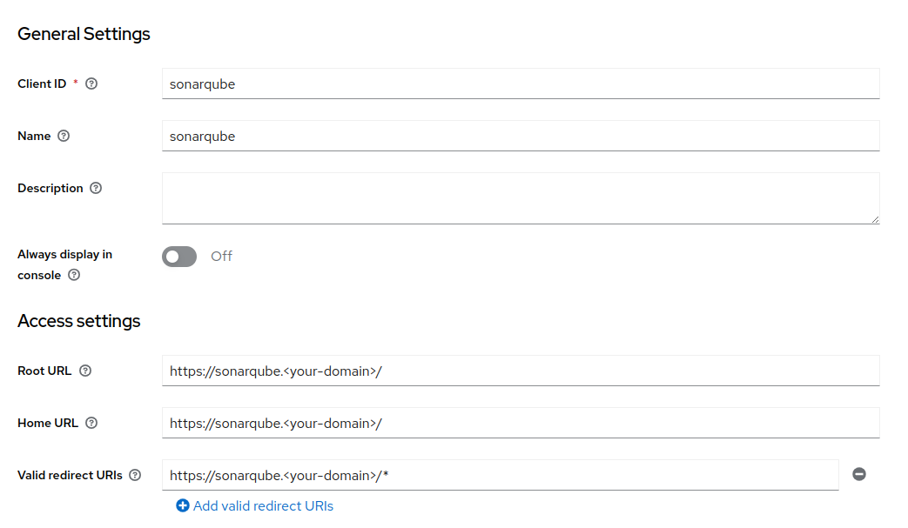

Sonarqube¶
SonarQube is an open source platform for continuous code quality inspection through different static source code analysis tools.
Requirements¶
Configuration¶
First we will need to configure Keycloak. We will assume that we have a new Realm called Factory.
Keycloak - Clients¶
Create sonarqube user.

Client Scope¶
Declare Groups scope.

Keycloak - Groups¶
Create sonar-administrators and sonar-users groups.

Keycloak - Users¶
Join user to a sonar-administrators group.

Keycloak - Mappers¶
Create a Mapper for Groups.


Sonarqube¶
The YAML file for the Helm Chart is:
ingress:
enabled: true
hosts:
- name: sonarqube.<your-domain>
path: /
annotations:
external-dns.alpha.kubernetes.io/hostname: sonarqube.<your-domain>
nginx.ingress.kubernetes.io/proxy-body-size: "8m"
ingressClassName: nginx
prometheusExporter:
enabled: false
jdbcOverwrite:
enable: false
sonarProperties:
sonar.core.serverBaseURL: "https://sonarqube.<your-domain>"
sonar.auth.oidc.enabled: true
sonar.auth.oidc.issuerUri: "https://keycloak.<your-domain>/auth/realms/factory"
sonar.auth.oidc.clientId.secured: "sonarqube"
sonar.auth.oidc.scopes: "openid email profile groups"
sonar.auth.oidc.groupsSync: true
plugins:
install:
- "https://github.com/vaulttec/sonar-auth-oidc/releases/download/v2.1.1/sonar-auth-oidc-plugin-2.1.1.jar"
postgresql:
enabled: true
account:
adminPassword: <username>
currentAdminPassword: <userpassword>
Sonarqube - Groups¶
sonar-administrators and sonar-users groups already exists.

Login¶